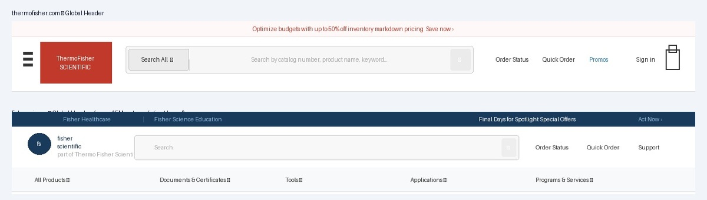

A complete rebuild of the navigation architecture for thermofisher.com and fishersci.com — improving usability, accessibility compliance, and mobile patterns for millions of users.

ThermoFisher's global header and footer had accumulated years of incremental changes without a cohesive direction. Navigation patterns were inconsistent between desktop and mobile, accessibility standards weren't met, and the visual language had fallen out of step with modern expectations.
Users were struggling to navigate — particularly on mobile, where the experience hadn't been meaningfully updated. Support tickets related to navigation were a recurring signal. At the same time, the header and footer weren't built on the design system components, meaning every team that needed to make a change was working from scratch, creating more inconsistency over time.
"The header and footer are the frame around every single page. Getting them wrong means every user, on every visit, feels the friction."
I wore every hat on this one. I designed the navigation architecture, wrote all the AEM component code, and owned the release — managing the staged rollout across both sites and coordinating with every development team that needed to adopt the new components. This wasn't a project where I handed specs to engineers; I was the engineer.
The revamp wasn't a visual refresh — it was a structural rethink. Every pattern decision was driven by user behavior, accessibility requirements, and the need to work consistently across both brand identities using the same underlying components.
Mobile navigation patterns differed between the two sites and hadn't kept pace with mobile usage growth. Users had to hunt for the right entry point.
Standardized hamburger navigation with consistent drawer behavior, touch targets sized to WCAG spec, and clear hierarchy from top-level to sub-categories.
Navigation lacked proper ARIA labels, keyboard navigation support was incomplete, and focus states were missing or inconsistent across interactive elements.
Full keyboard navigation support, proper ARIA roles and labels, visible focus indicators, and skip-nav links — compliant across both site implementations.
The mega-menu had grown organically without a clear grid or information architecture. Category groupings were inconsistent and the visual density was overwhelming.
Redesigned mega-menu with a clear grid system, consistent grouping logic, and visual hierarchy that guides users from broad categories to specific destinations.
Footer link architecture had accumulated redundancy and lacked logical grouping. Critical utility links (Order Status, Support) were hard to find.
Reorganized into clear utility, product, and company groupings. High-frequency tasks (Order Status, Quick Order, Support) elevated for faster access.
The header and footer are on every page of two of the largest life sciences e-commerce sites in the world. A mistake here isn't a bug on one page — it's a bug everywhere, for every user, instantly. That shaped every decision in our process.
Catalogued every navigation pattern across both sites — desktop and mobile. Identified accessibility failures, inconsistent interaction patterns, and information architecture issues. This became the brief that aligned stakeholders on what needed to change and why.
Presented findings to development managers and directors across both properties. The core challenge: every team had their own opinion on nav structure. We got alignment by anchoring every decision to user data and accessibility requirements — not personal preference.
Designed the new header and footer in Figma, covering desktop, tablet, and mobile breakpoints for both brand identities. Built interactive prototypes to validate navigation flows with stakeholders before writing a line of code.
I wrote the header and footer as AEM components, using the design system as the foundation. The same component code powers both thermofisher.com and fishersci.com — brand differences are handled through design tokens, not separate codebases. One build, two brands.
I owned the release end to end — validating in staging, coordinating rollout timing with each development team, and maintaining compatibility so no team's pages broke mid-migration. The header is on every page; there's no such thing as a quiet release.
Every team with pages on the sites needed to migrate. The SOPs we built for the design system (Case Study 1) were essential — without them, coordinating this rollout would have been impossible.
The header sits on millions of pages. We built a careful compatibility layer so teams could adopt the new components on their own timeline without their pages breaking in the interim.
thermofisher.com and fishersci.com have distinct visual identities. The component had to support both without forking — solved through the design token architecture in the underlying system.
The revamped header and footer shipped across both sites. The result: a navigation experience that meets accessibility standards, works consistently across devices, and maintains brand distinction between thermofisher.com and fishersci.com — all powered by the same underlying AEM components.
The project also validated the design system's value at scale. By building on the AEM component library rather than from scratch, we were able to ship a consistent, accessible navigation experience across two major enterprise sites — without duplicating the engineering effort.